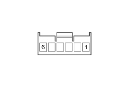

7030HA Check on hood operation
- Path
- Test > 70 FITTINGS > 7030 SUN ROOF/GLASS PANEL > 7030H AUTOMATICALLY OPERATED HOOD > 7030HA Check on hood operation
- Kind
- test / check procedure
- Applies to
- engines: 2.2 JTS, 3.2 JTS; all production periods; only with equipment: Spider
- Interactive page
- https://sloeber94.github.io/elrnDB-aBrrSpdr/en/#/946004028
Applies to: engines: 2.2 JTS, 3.2 JTS; all production periods; only with equipment: Spider
STEP | CHECK TO BE PERFORMED | REMEDIAL ACTION IF THE CHECK IS NOT OK |
|---|---|---|
1 | Check using Examiner Using the Examiner connect to the hood control unit and select "Hood button" Press the hood control button and check the switching between the two "Opening" and "Closing" states | Move on to Step 2 |
2 | Check the continuity of the wiring Disconnect the connector for the hood control button Bridge terminals 2, 3 and 5 using a wire at the wiring side button connector. Check that the hood opens. Bridge terminals 5 and 4 using a wire at the wiring side button connector and check that the hood closes. | Restore the correct continuity for the wiring between the button and the hood control unit. If it is okay, replace the switch |

Connector pin out
1 Free
2 To the Body Computer (connector E pin 35)
3 To the hood control unit (connector A pin 11) open position
4 To the hood control unit (connector A pin 3) closed position
5 Earth
6 Free